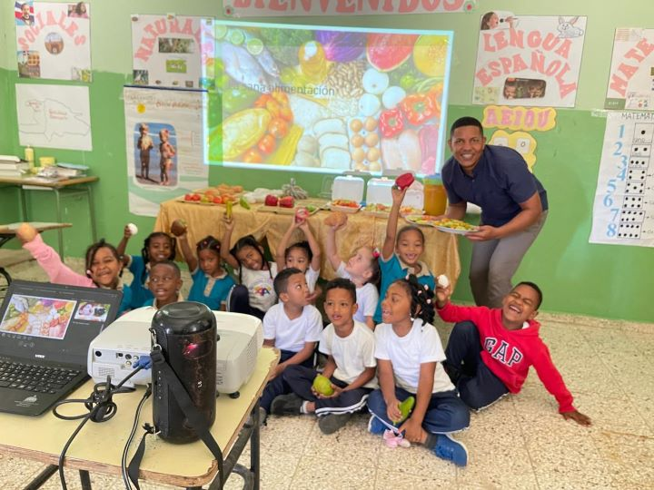

Esta es tu plataforma educativa donde navegarás en un mar de ideas educativas para potenciar tu práctica docente a partir de mi experiencia en el primer ciclo del nivel primario.
Actualmente trabajo como profesor en el Centro Educativo Eduardo Beltré Luciano, en el municipio de Bohechío, perteneciente a la Regional 02, Distrito 05, San Juan Este. Desempeño mis funciones en el Primer Ciclo del Nivel Primario, impartiendo Lengua Española, Matemática, Ciencias Sociales y Ciencias de la Naturaleza en el primer grado de este ciclo.
